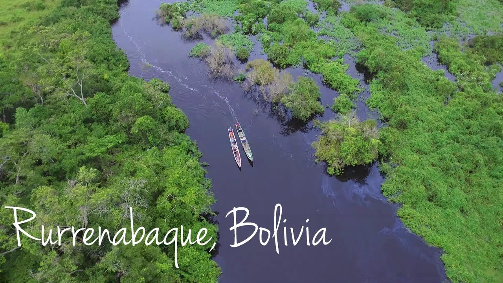

DREAM CITIES
Accueil
Acceuil
Bolivie
Bora-Bora
Chilie
Dubai
vietnam
Taj Mahal
Saint-Louis
Bolivie
Présentation de la bolivie
La découverte de la Bolivie peut commencer par la capitale administrative, la Paz où
architectures modernes cohabitent avec des monuments datant de plusieurs siècles, des
églises coloniales dont la cathédrale Saint-François, le musée des Arts, la Place Murillo et le
surprenant point de vue du haut du mirador Killi Killi sont des incontournables. Vos quelques
jours à La Paz et ses environs seront déjà chargés de souvenirs. Laissez-vous ensuite tenter
par une excursion sur le lac Titicaca avec la Isla del Sol avant d’enchaîner sur une longue
randonnée dans l’un des Parcs nationaux du sud du pays. Plongez dans l’histoire coloniale du
pays en flânant dans les villes de Tarija, Potosi et la Villa de Cochabamba. Ne manquez pas
les paysages époustouflants du Salar de Uyuni, le plus vaste désert de sel du monde, et les
parcs et réserves du nord du pays au cœur de l’Amazonie.
